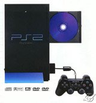
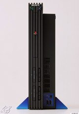

| Why The |
| Playstation 2 |
| Doesn't Matter |
| After three years of hype, Sony's latest wonder machine is out (in Japan, at least). No other machine has generated as much of a furore as the computer and gaming press huddle around the newborn, desperately hoping to be attached in some way to the success of what is guaranteed to be the Next Big Thing. Meanwhile, Jon Hyde is helping himself to the now-empty free bar and reminiscing about the good old days when he was guaranteed to get stitched up over at least half-decent games. |
|
Your starter for five: what do Bros, The Real Ghostbusters and Street Hawk all have in common? Well, yes, llamas is one right answer… any other takers? You at the back, perhaps? Yes, you can go to the bathroom. Sigh. Anyone else? Madam, what do you think? That’s right! Four letters: F-A-D-S. They were all fads. Here one day, gone the next. Now, to give this feature a sort-of scholarly feel, I’ll start with a definition of the word “fad” from The Little Oxford Dictionary. Apparently, it means a “craze”, or a “pet notion.” I have no idea what a “pet notion” is, so I’ll concentrate on the first word : craze. |
 The future of humanity (or so Sony would have us believe) |
|
 The PS2. Again. But from the side. |
The problem with things like the Playstation, the N64 and even the Dreamcast is that they’re crazes. They’re transitory. One minute everyone’s leaping up and down like meercats on sugar rushes: “It’s the Playstation 2! Oh my gosh! Look at all those colours, and that sound and those shiny CDs… it’s, it’s, it’s the best thing since sliced bread! Quick, buy one! Buy ten! All these developers have signed up, and this machine will remake the face of the videogame industry!” Drooling over the screenshots and specs, everyone seems to have forgotten that age-old adage: “Good graphics do not a good game make.” Space Ace, Crescent Galaxy, Dragon’s Lair, and Katharsis anyone? No? Thought not. Yet some of those who drool over the screenshots will also get to play the software on offer, and bring back reports of varying degrees of quality. Certainly, some of the games are complete tosh. The law of averages dictates as much, and it takes developers a while to really push a machine. And there are some great little games in the midst of all the bad ones; so then the console is saved, right? The Playstation 2 suddenly becomes the world-defining console because it has some great games? Sorry, no. You see, these games won’t be played three months after they come out. More, newer, flashier games will come out that will really push the console to its limits and amaze everyone with their ground-breaking technology. After all, a system is only as good as its software, so good software makes a good system. And indeed it does, but this new barrage of software on this new system is precisely why the Playstation 2 doesn’t really matter. |
|
Next Page |
| Back to Contents |